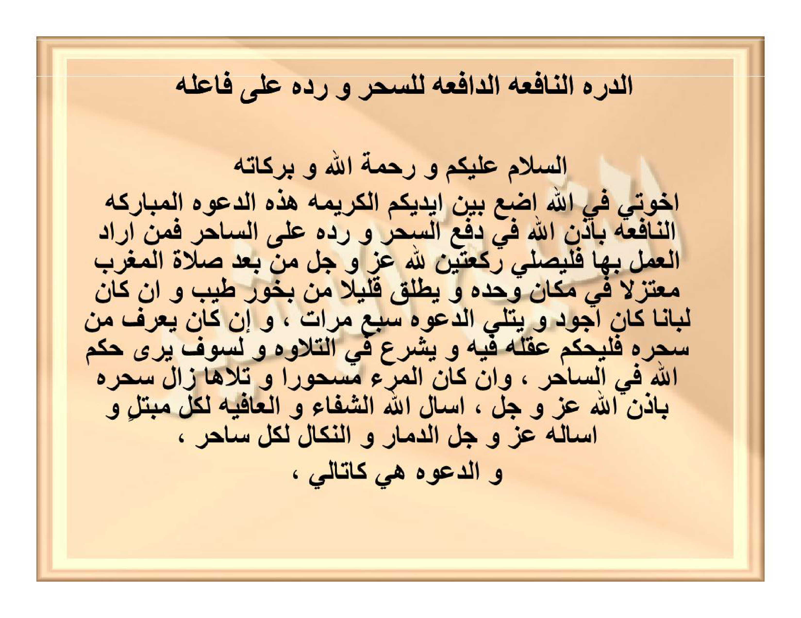

HALAMAN 37 — AD-DURRATUN-NĀFI'ATUD-DĀFI'ATU LIS-SIHRI WA RADDIHĪ (1/2) — الدُّرَّةُ النَّافِعَةُ الدَّافِعَةُ لِلسِّحْرِ وَرَدِّهِ عَلَى فَاعِلِهِ
arab
الدُّرَّةُ النَّافِعَةُ الدَّافِعَةُ لِلسِّحْرِ وَرَدِّهِ عَلَى فَاعِلِهِ
السَّلَامُ عَلَيْكُمْ وَرَحْمَةُ اللهِ وَبَرَكَاتُهُ
إِخْوَتِي فِي اللهِ أَضَعُ بَيْنَ أَيْدِيكُمُ الْكَرِيمَةِ هَذِهِ الدَّعْوَةَ الْمُبَارَكَةَ النَّافِعَةَ بِإِذْنِ اللهِ فِي دَفْعِ السِّحْرِ وَرَدِّهِ عَلَى السَّاحِرِ فَمَنْ أَرَادَ الْعَمَلَ بِهَا فَلْيُصَلِّ رَكْعَتَيْنِ لِلَّهِ عَزَّ وَجَلَّ مِنْ بَعْدِ صَلَاةِ الْمَغْرِبِ مُعْتَزِلًا فِي مَكَانٍ وَحْدَهُ وَيُطْلِقُ قَلِيلًا مِنْ بَخُورٍ طَيِّبٍ وَإِنْ كَانَ لُبَانًا كَانَ أَجْوَدَ وَيَتْلُو الدَّعْوَةَ سَبْعَ مَرَّاتٍ ، وَإِنْ كَانَ يَعْرِفُ مَنْ سَحَرَهُ فَلْيُحَكِّمْ عَقْلَهُ فِيهِ وَيَشْرَعُ فِي التِّلَاوَةِ وَلَسَوْفَ يَرَى حُكْمَ اللهِ فِي السَّاحِرِ ، وَإِنْ كَانَ الْمَرْءُ مَسْحُورًا وَتَلَاهَا زَالَ سِحْرُهُ بِإِذْنِ اللهِ عَزَّ وَجَلَّ ، أَسْأَلُ اللهَ الشِّفَاءَ وَالْعَافِيَةَ لِكُلِّ مُبْتَلًى وَأَسْأَلُهُ عَزَّ وَجَلَّ الدَّمَارَ وَالنَّكَالَ لِكُلِّ سَاحِرٍ ،
وَالدَّعْوَةُ هِيَ كَالتَّالِي ،
latin
Ad-durratun-nāfi'atud-dāfi'atu lis-sihri wa raddihī 'alā fā'ilihī.
As-salāmu 'alaikum wa rahmatullāhi wa barakātuhū.
Ikhwatī fillāhi adha'u baina aidīkumul-karīmati hādzihid-da'watal-mubārakatan-nāfi'ata bi-idznillāhi fī daf'is-sihri wa raddihī 'alas-sāhiri faman arādal-'amala bihā falyushalli rak'ataini lillāhi 'azza wa jalla min ba'di shalātil-maghribi mu'tazilan fī makānin wahdahū wa yuthliqu qalīlan min bakhūrin thayyibin wa in kāna lubānan kāna ajwada wa yatlud-da'wata sab'a marrātin, wa in kāna ya'rifu man saharahū falyuhakkim 'aqlahū fīhi wa yasyra'u fit-tilāwati wa lasaufa yarā hukmallāhi fis-sāhiri, wa in kānal-mar'u mas-hūran wa talāhā zāla sihruhū bi-idznillāhi 'azza wa jalla, as'alullāhasy-syifā'a wal-'āfiyata likulli mubtalan wa as'aluhū 'azza wa jallad-damāra wan-nakāla likulli sāhirin,
Wad-da'watu hiya kat-tālī,
Terjemahan
Mutiara yang bermanfaat lagi menolak sihir serta mengembalikannya kepada pelakunya.
Assalamu'alaikum warahmatullahi wabarakatuh.
Wahai saudara-saudaraku karena Allah, aku letakkan di hadapan tangan kalian yang mulia doa yang diberkahi lagi bermanfaat ini dengan izin Allah dalam menolak sihir serta mengembalikannya kepada penyihirnya. Barang siapa hendak mengamalkannya, maka hendaklah ia melaksanakan shalat dua rakaat karena Allah 'azza wa jalla setelah shalat Maghrib dengan menyendiri di suatu tempat seorang diri, lalu menyalakan sedikit bukhur (wewangian) yang harum — dan apabila menggunakan lubān (kemenyan Arab) maka itu lebih utama —, kemudian membaca doa tersebut sebanyak tujuh kali. Dan apabila ia mengetahui siapa orang yang menyihirnya, maka hendaklah ia memusatkan akalnya (ingatannya) pada orang tersebut lalu mulai membaca doa ini; niscaya ia benar-benar akan melihat ketetapan hukuman Allah pada penyihir tersebut. Dan apabila seseorang terkena sihir lalu ia membacanya, niscaya hilanglah sihirnya dengan izin Allah 'azza wa jalla. Aku memohon kepada Allah kesembuhan dan afiat bagi setiap orang yang tertimpa ujian, dan aku memohon kepada-Nya 'azza wa jalla kehancuran serta siksaan pembalasan bagi setiap penyihir.
Adapun doanya adalah sebagai berikut:
Syarah dan Penjelasan
1. **Verifikasi 3× vs `hal_37.png` — Pengembalian Doa Pengarang & Pembersihan Sisipan**:
- Pada draf kiriman sebelumnya, kalimat doa pengarang di baris ke-9 dan ke-10 (`أَسْأَلُ اللهَ الشِّفَاءَ وَالْعَافِيَةَ لِكُلِّ مُبْتَلًى وَأَسْأَلُهُ عَزَّ وَجَلَّ الدَّمَارَ وَالنَّكَالَ لِكُلِّ سَاحِرٍ`) terlewat dan tidak diterjemahkan di bagian `Terjemahan`. Kini kalimat tersebut telah diterjemahkan secara utuh.
- Subjudul sisipan `طَرِيقَةُ الْعَمَلِ:` yang tidak ada pada halaman asli telah dihapus agar struktur baris-per-baris murni mengikuti kitab.
- Perbaikan transliterasi: kata `مَسْحُورًا` ditulis *mas-hūran* (dengan tanda hubung agar tidak terbaca *mashūran* = مشهورا), `الشِّفَاءَ` ditulis *asy-syifā'a* (`sy`), dan `وَرَدِّهِ` dibaca *wa raddihī* (*majrūr* mengikuti `لِلسِّحْرِ` / `دَفْعِ السِّحْرِ`).
2. **Makna `فَلْيُحَكِّمْ عَقْلَهُ فِيهِ` (Memfokuskan Akal/Batin pada Pelaku)**:
- Ungkapan Syeikh al-Basyir `وَإِنْ كَانَ يَعْرِفُ مَنْ سَحَرَهُ فَلْيُحَكِّمْ عَقْلَهُ فِيهِ` bermakna: apabila korban telah mengetahui secara yakin (misalnya melalui *kasyf manāmī* pada Halaman 29–30 atau bukti nyata) siapa pelaku sihirnya, maka saat membaca *Da'wah* ini sebanyak 7 kali, ia mengikat fokus pikirannya (*tahkīmul-'aql* / *tawajjuh*) pada sosok penyihir tersebut agar pantulan *raddus-sihr* tepat mengarah kepada sumber pengirimnya. Namun jika tidak mengetahui pelakunya, cukup membaca doa ini dengan niat kesembuhan dan pengembalian sihir kepada siapa pun pembuatnya dalam ilmu Allah.
Khususiyah dan Tatacara Praktik
1. **Waktu Khusus: Ba'da Shalat Maghrib (`مِنْ بَعْدِ صَلَاةِ الْمَغْرِبِ`)**:
- Berbeda dengan *Kasyf Manāmī* (Hal. 29) dan *Da'watut-Tafwīdh* (Hal. 35) yang diamalkan setelah shalat Isya, *Ad-Durratun-Nāfi'ah* ini secara khusus diamalkan **setelah shalat Maghrib**, yaitu saat pergantian waktu siang menuju malam ketika gelombang kiriman sihir lazim bergerak.
2. **Syarat Khalwat Ringan (`مُعْتَزِلًا فِي مَكَانٍ وَحْدَهُ`)**:
- Pengamal mengerjakan shalat sunnah 2 rakaat dan membaca doa ini **7 kali** (teks doanya termuat pada Halaman 38) di dalam kamar atau ruangan yang tenang seorang diri (*mu'tazilan wahdahū*) sambil menyalakan bukhur yang harum, terutama *lubān dzakar* (kemenyan Arab).
3. **Dua Khasiat Sekaligus**:
- **Syifā' (Penyembuhan)**: Melunturkan buhul dan pengaruh sihir dari tubuh orang yang tersihir (*mas-hūr*).
- **Radd (Pembalikan)**: Mengembalikan dampak buruk sihir tersebut kepada penyihirnya (*sāhir*) dengan izin dan keadilan Allah 'azza wa jalla.

[Scan Lengkap: HALAMAN 37 — AD-DURRATUN-NĀFI'ATUD-DĀFI'ATU LIS-SIHRI WA RADDIHĪ (1/2) — الدُّرَّةُ النَّافِعَةُ الدَّافِعَةُ لِلسِّحْرِ وَرَدِّهِ عَلَى فَاعِلِهِ]